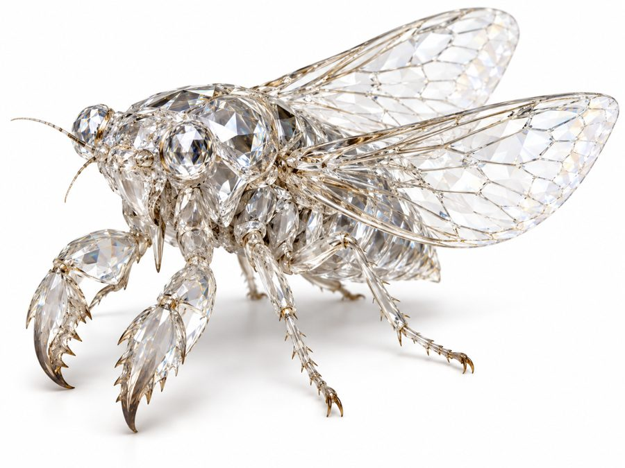

Sobraevit
Palm-sized crystal cicadas with crab-like claws, born from the living crystal of the desert.
- Group
- Insects
- Tags
- crystal TeDrona
- Size
- About the size of a palm. Decided
- Body
- Clear, crystalline, faceted, with glassy wings and crab-like claws. Decided
- Life cycle
- They burrow underground and emerge from time to time, on a rhythm set by how fast the crystal grows, not by any seasonal cycle. Canon
- Nursery
- They emerge from and lay their eggs directly in the living crystal formations of TeDrona. Canon
Wings
Shed wings are layered into translucent, stained-glass-like fabric for veils, sleeves and ceremonial cloaks. It is tied to TeDrona and Sobraeqal’s half-living crystal ecology. Canon
Related materials
Sobraevael are flexible tendrils of the living crystal itself, braided into belts, jewelry and collars.
